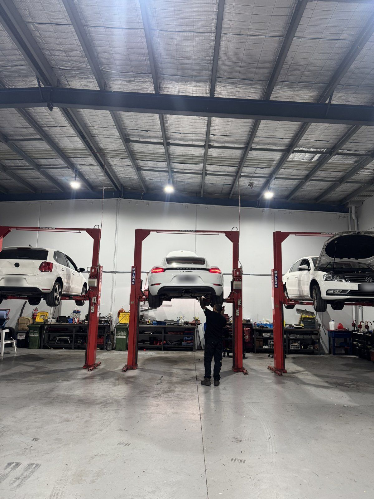
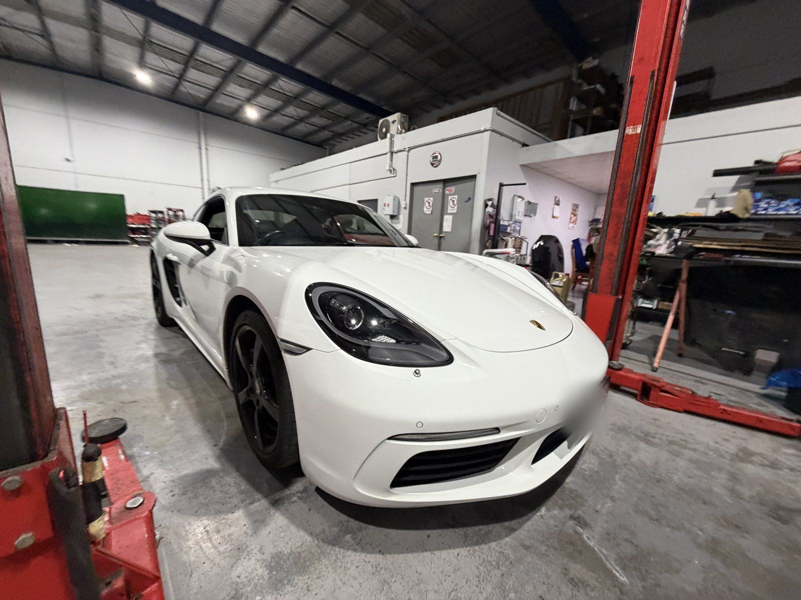
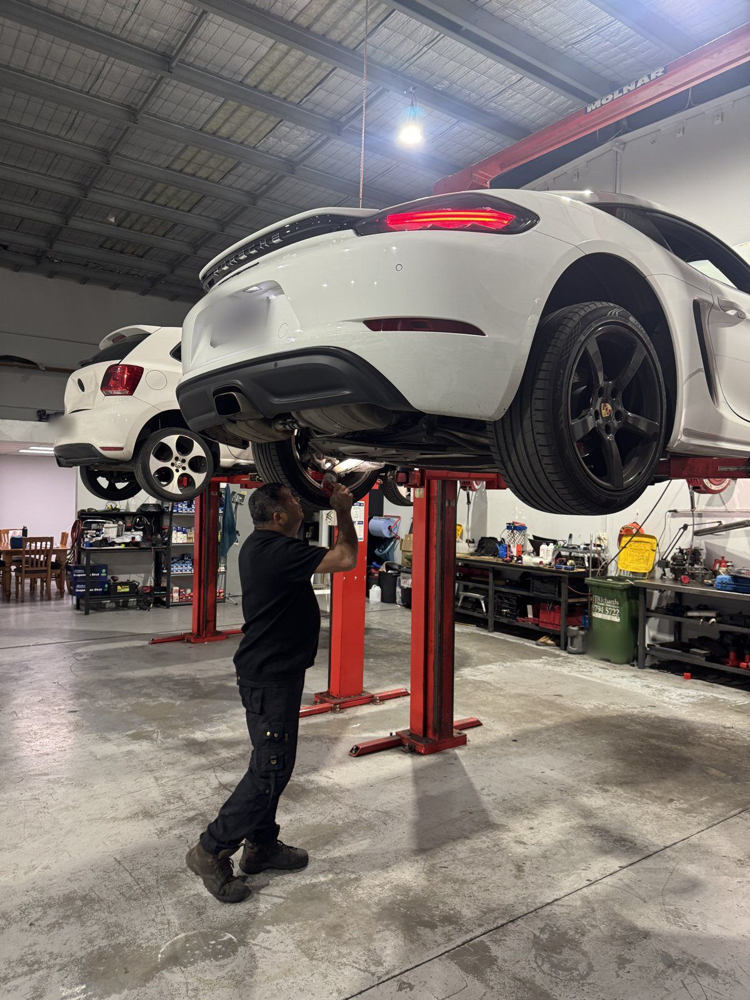
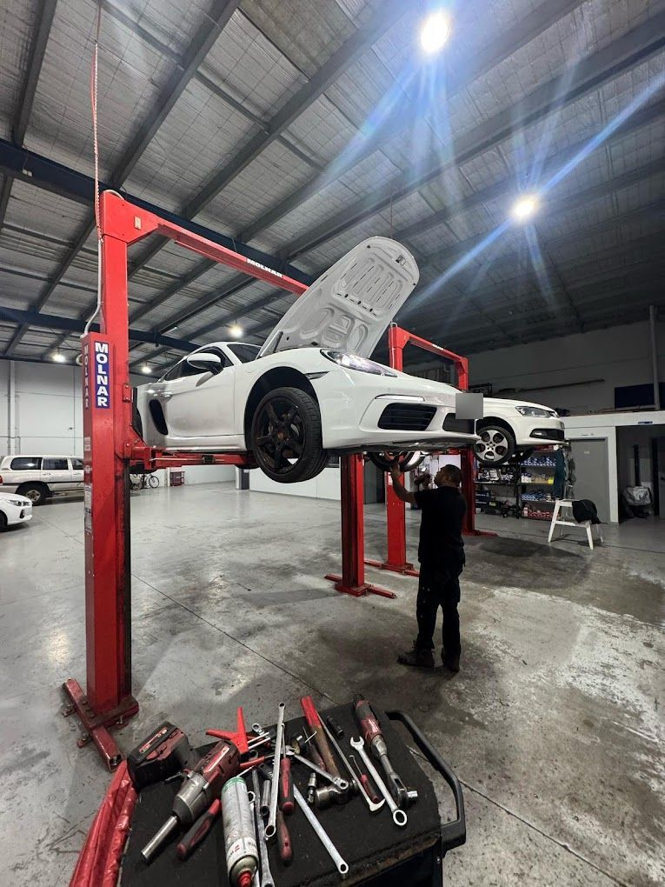
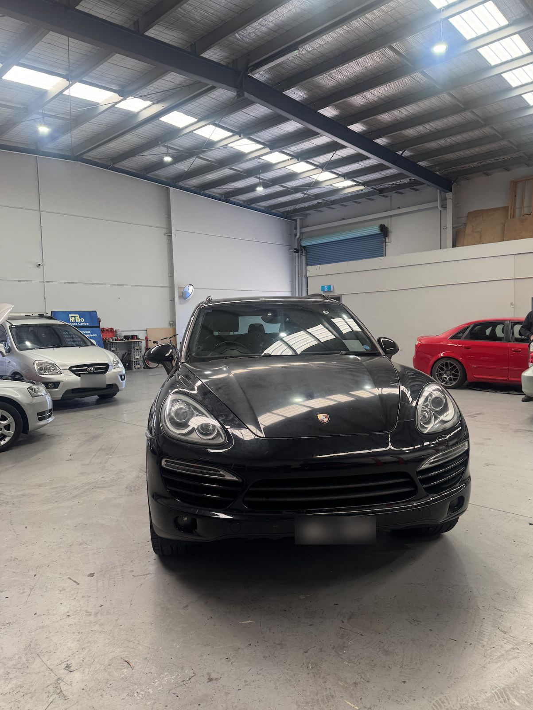
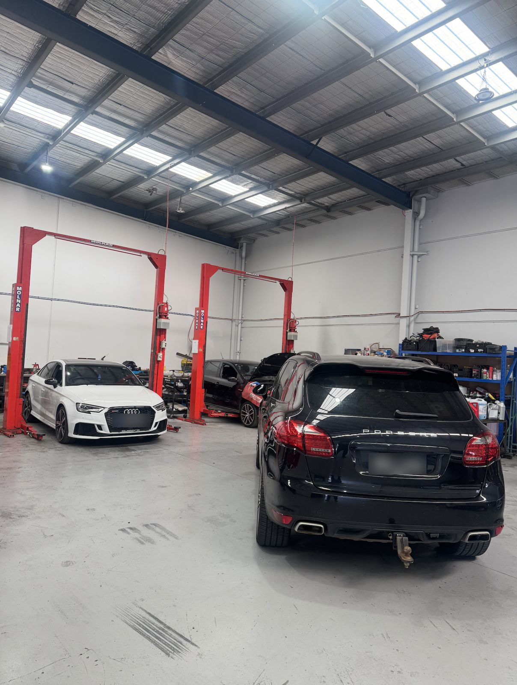
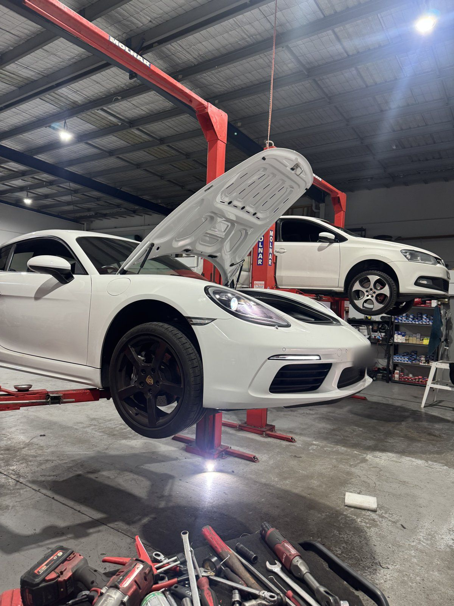
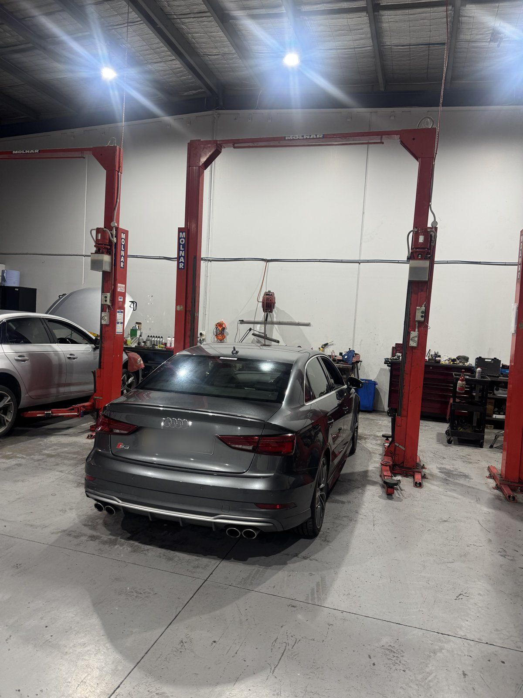
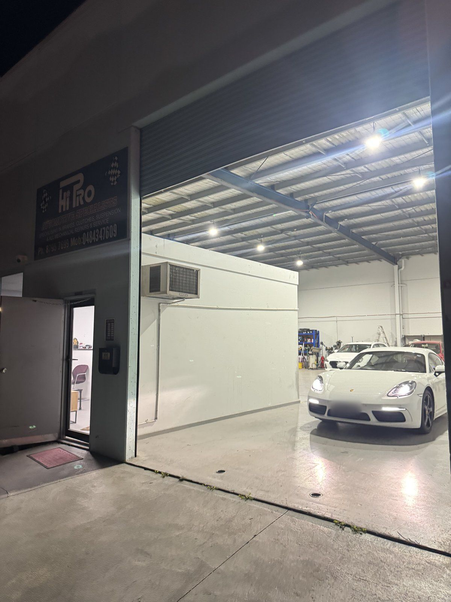
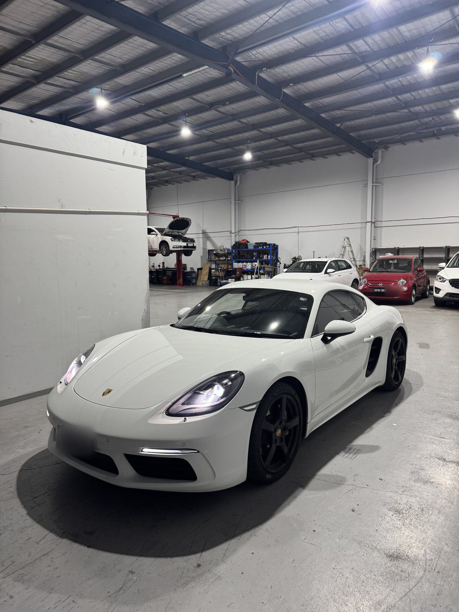

Logbook servicing and your new-car warranty
Why an independent specialist can service your new Audi or VW without affecting the warranty, and what to check in your logbook.

Specialist car servicing and repairs for Audi, Volkswagen and European cars in Seaford, minutes from Frankston.
Start discoveringOur story
VAG Euro Automotive is an independent car mechanic on Stephenson Road in Seaford, a few minutes from Frankston. For more than five years we've serviced and repaired Volkswagen Group cars for drivers across Melbourne's south-east. Workshop manager Vic and a team of qualified mechanics look after everything from a daily Golf to an Audi RS 3. We also service Skoda, Cupra, Porsche, Mercedes-Benz, BMW and other European cars.
Visit our workshop
Independent workshop
Dealer-standard servicing without the dealer experience. We follow the manufacturer's logbook schedule and use oils and parts that meet the right specifications. You deal directly with the people working on your car.
European car servicingBook a service
Tell us about your car, what it needs and when suits you. Vic will call to confirm your booking and give you a quote before any work starts.
Prefer to talk? Call (03) 8795 7699.
Need to change something? Call (03) 8795 7699 or email Hiproservicecentre@gmail.com.



Service
We quote before any work starts and call you before doing anything extra. Pay by card, Afterpay, Zip or humm.
Book nowGallery








News & guides
Why an independent specialist can service your new Audi or VW without affecting the warranty, and what to check in your logbook.
Wet-clutch and dry-clutch gearboxes have different needs. Here's how to tell which one you have.
A rattle on cold start can be an early warning sign. Here's when to book a check.
FAQ
No. In Australia, using an independent mechanic does not void your new-car warranty as long as the servicing follows the manufacturer's specifications. We follow the manufacturer's logbook schedule, use parts and oils that meet the right specifications, and stamp your logbook.
Audi and Volkswagen are our speciality, and we also service Skoda, Cupra, Porsche, Mercedes-Benz, BMW, Mini and other European cars.
We are at 11 Stephenson Road, Seaford VIC 3198, a short drive from Frankston, Carrum Downs and Chelsea. We are open Monday to Friday 8:00 to 5:00 and Saturday 8:30 to 2:00.
Use the booking form on this page to choose your car, what it needs and a drop-off time, or call us on (03) 8795 7699. We call you to confirm and give you a quote before any work starts.
Yes, loan cars are available on request, subject to availability. You can also wait in our lounge for shorter jobs, or use the key drop box to drop off early or after hours.
Yes. We service Haldex all-wheel-drive systems on Audi quattro and Volkswagen 4MOTION cars, and diagnose and repair diesel particulate filter (DPF) and EGR faults on TDI diesels.
Yes. We accept EFTPOS, Visa, Mastercard, Afterpay, Zip and humm.
Areas we service
Our workshop is in the Seaford industrial area off Stephenson Road, easy to reach from Frankston, Carrum Downs and Chelsea. Customers bring their Audi, Volkswagen and European cars to us from:
Contact
11 Stephenson Road
Seaford VIC 3198
(03) 8795 7699
Hiproservicecentre@gmail.com
| Monday | 8:00 – 5:00 |
| Tuesday | 8:00 – 5:00 |
| Wednesday | 8:00 – 5:00 |
| Thursday | 8:00 – 5:00 |
| Friday | 8:00 – 5:00 |
| Saturday | 8:30 – 2:00 |
| Sunday | Closed |